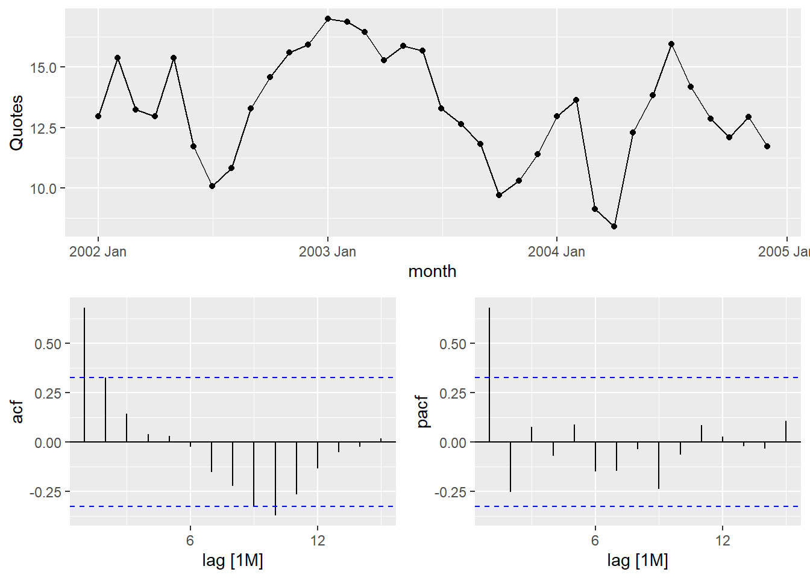
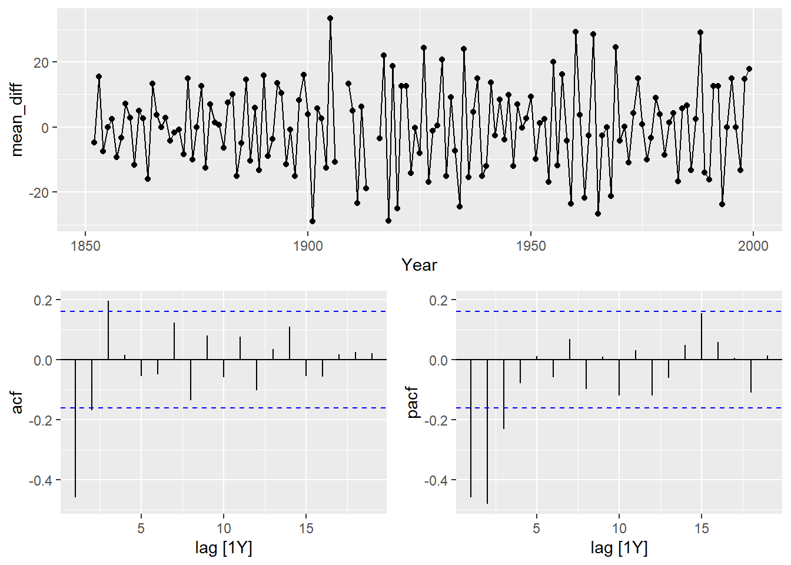
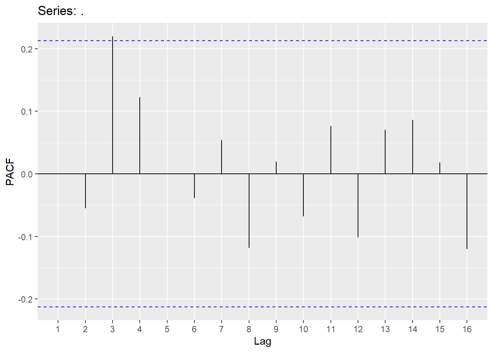
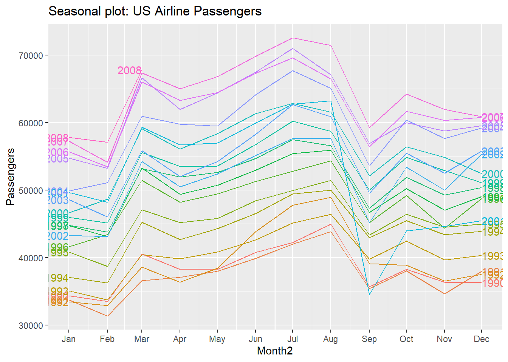
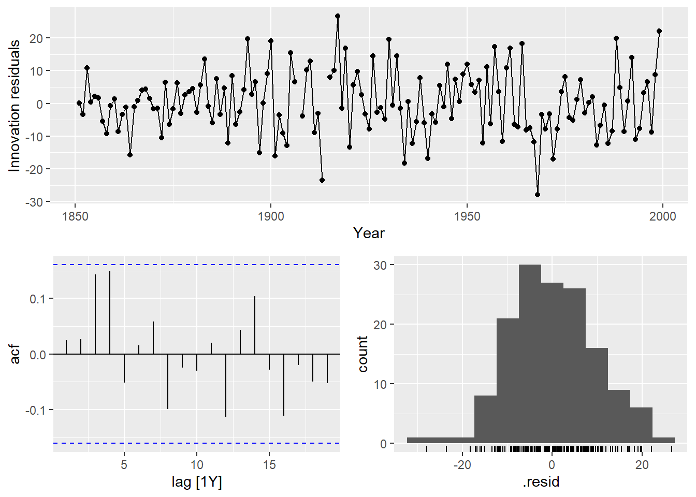
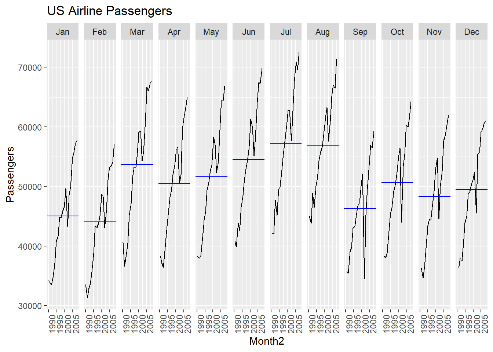

Chapter 5 Examples
We will now demonstrate these ideas on two different examples:
First example is the Quotes data set:
Quotes.ts<-Quotes |> mutate(date = seq(ymd('2002-01-01'),ymd('2005-04-21'),by='months')) |>
mutate(month=yearmonth(date)) |> as_tsibble(index=month)
Quotes_train<-Quotes.ts %>% filter(year(date)<2005)
autoplot(Quotes_train,Quotes)+labs(title="Time Series of Monthly Stock quotes", x="Time", y="Quotes")

quotes_model <-Quotes_train %>%
model(ar1 = ARIMA(Quotes ~ pdq(1,0,0) + PDQ(0,0,0)),
ma1 = ARIMA(Quotes ~ pdq(0,0,1) + PDQ(0,0,0)),
search1 = ARIMA(Quotes),
search2 = ARIMA(Quotes,stepwise = F))
quotes_model2<-as.data.frame(quotes_model)
t(quotes_model2)## [,1]
## ar1 ARIMA(1,0,0) w/ mean
## ma1 ARIMA(0,0,1) w/ mean
## search1 ARIMA(1,0,1) w/ mean
## search2 ARIMA(1,0,1) w/ mean## # A tibble: 4 × 6
## .model sigma2 log_lik AIC AICc BIC
## <chr> <dbl> <dbl> <dbl> <dbl> <dbl>
## 1 search1 2.54 -66.8 142. 143. 148.
## 2 search2 2.54 -66.8 142. 143. 148.
## 3 ma1 2.75 -68.7 143. 144. 148.
## 4 ar1 2.79 -68.8 144. 144. 148.


## # A tibble: 1 × 3
## .model lb_stat lb_pvalue
## <chr> <dbl> <dbl>
## 1 search1 3.60 0.892Second example is the Hurricane data set (mean Maximum velocity):
Hurricane.ts<- hurricane %>% as_tsibble(index=Year)
Hurricane_train <-Hurricane.ts %>% filter(Year <2000)
autoplot(Hurricane_train,MeanVMax)+labs(title="Time Series of Yearly Mean Velocity for Hurricanes", x="Time", y="MPH")
## # A tibble: 1 × 1
## ndiffs
## <int>
## 1 1Hurricane_train <- Hurricane_train %>% mutate(mean_diff=difference(MeanVMax))
Hurricane_train %>% gg_tsdisplay(mean_diff,plot_type = 'partial')## Warning: Removed 1 row containing missing values or values outside the scale range
## (`geom_line()`).## Warning: Removed 5 rows containing missing values or values outside the scale range
## (`geom_point()`).
hurr_model <-Hurricane_train %>%
model(ar3 = ARIMA(MeanVMax ~ 0 + pdq(3,1,0) + PDQ(0,0,0)),
ma2 = ARIMA(MeanVMax ~ 0 + pdq(0,1,2) + PDQ(0,1,0)),
arima32 = ARIMA(MeanVMax~0 + pdq(3,1,2) + PDQ(0,0,0)),
search1 = ARIMA(MeanVMax),
search2 = ARIMA(MeanVMax,stepwise = F))
hurr_model2<-as.data.frame(hurr_model)
t(hurr_model2)## [,1]
## ar3 ARIMA(3,1,0)
## ma2 ARIMA(0,1,2)
## arima32 ARIMA(3,1,2)
## search1 ARIMA(1,0,1) w/ mean
## search2 ARIMA(2,0,3) w/ mean## # A tibble: 5 × 6
## .model sigma2 log_lik AIC AICc BIC
## <chr> <dbl> <dbl> <dbl> <dbl> <dbl>
## 1 arima32 94.6 -539. 1090. 1090. 1108.
## 2 ma2 97.4 -542. 1091. 1091. 1100.
## 3 search2 93.1 -540. 1094. 1095. 1115.
## 4 search1 96.3 -544. 1096. 1096. 1108.
## 5 ar3 108. -549. 1106. 1106. 1118.

## Warning: Removed 2 rows containing missing values or values outside the scale range
## (`geom_point()`).## Warning: Removed 2 rows containing non-finite outside the scale range
## (`stat_bin()`).


## Warning: Removed 2 rows containing missing values or values outside the scale range
## (`geom_point()`).## Warning: Removed 2 rows containing non-finite outside the scale range
## (`stat_bin()`).
## # A tibble: 1 × 3
## .model lb_stat lb_pvalue
## <chr> <dbl> <dbl>
## 1 arima32 5.15 0.3985.1 Forecasting
Now let’s forecast each of our models:

quotes_for<-quotes_model %>% select(search1) %>% fabletools::forecast(h=4)
quotes_resid<-Quotes$Quotes[37:40]-quotes_for$.mean
MAPE<-mean(abs(quotes_resid/Quotes$Quotes[37:40]))
MAE<-mean(abs(quotes_resid))
MAPE## [1] 0.2330841## [1] 3.952702
hurr_for<-hurr_model %>% select(arima32) %>% fabletools::forecast(h=8)
hurr_resid<-hurricane$MeanVMax[150:157]-hurr_for$.mean
MAPE<-mean(abs(hurr_resid/hurricane$MeanVMax[150:157]))
MAE<-mean(abs(hurr_resid))
MAPE## [1] 0.06067555## [1] 5.9862665.2 Python Code for ARMA/ARIMA models
import numpy as np
import pandas as pd
import matplotlib.pyplot as plt
from matplotlib import pyplot
from pandas import DataFrame
from statsmodels.tsa.stattools import adfuller
from statsmodels.graphics.tsaplots import plot_acf
from statsmodels.graphics.tsaplots import plot_pacf
from statsmodels.tsa.arima.model import ARIMA
quotes=pd.read_csv("Q:\\My Drive\\Fall 2017 - Time Series\\DataR\\fpp_insurance.csv")
y=pd.read_csv("Q:\\My Drive\\Fall 2017 - Time Series\\DataR\\ar2.csv")
result=adfuller(quotes["Quotes"])
print(f'ADF p-value: {result[1]}')## ADF p-value: 0.010194998749727997
## <function make_python_function.<locals>.python_function at 0x0000020E51741990>## SARIMAX Results
## ==============================================================================
## Dep. Variable: Y No. Observations: 1000
## Model: ARIMA(2, 0, 0) Log Likelihood -3695.014
## Date: Tue, 20 Aug 2024 AIC 7398.028
## Time: 11:20:26 BIC 7417.659
## Sample: 0 HQIC 7405.489
## - 1000
## Covariance Type: opg
## ==============================================================================
## coef std err z P>|z| [0.025 0.975]
## ------------------------------------------------------------------------------
## const -0.1365 0.420 -0.325 0.745 -0.960 0.687
## ar.L1 0.6406 0.030 21.165 0.000 0.581 0.700
## ar.L2 -0.3759 0.030 -12.466 0.000 -0.435 -0.317
## sigma2 94.7853 4.193 22.604 0.000 86.567 103.004
## ===================================================================================
## Ljung-Box (L1) (Q): 0.02 Jarque-Bera (JB): 0.26
## Prob(Q): 0.89 Prob(JB): 0.88
## Heteroskedasticity (H): 1.04 Skew: -0.03
## Prob(H) (two-sided): 0.73 Kurtosis: 3.05
## ===================================================================================
##
## Warnings:
## [1] Covariance matrix calculated using the outer product of gradients (complex-step).
## 0
## count 1000.000000
## mean -0.001313
## std 9.747534
## min -33.282545
## 25% -6.475670
## 50% 0.117391
## 75% 6.510636
## max 30.318100


Checking for white noise: The first value in the Ljung-Box test is the test statistic and the second value is the p-value.
import numpy as np
import pandas as pd
import matplotlib.pyplot as plt
from matplotlib import pyplot
from pandas import DataFrame
import statsmodels.api as sm
from statsmodels.tsa.stattools import adfuller
from statsmodels.graphics.tsaplots import plot_acf
from statsmodels.graphics.tsaplots import plot_pacf
from statsmodels.tsa.arima.model import ARIMA
quotes=pd.read_csv("Q:\\My Drive\\Fall 2017 - Time Series\\DataR\\fpp_insurance.csv")
y=pd.read_csv("Q:\\My Drive\\Fall 2017 - Time Series\\DataR\\ar2.csv")
model = ARIMA(y, order=(2,0,0))
model_fit = model.fit()
print(model_fit.summary())## SARIMAX Results
## ==============================================================================
## Dep. Variable: Y No. Observations: 1000
## Model: ARIMA(2, 0, 0) Log Likelihood -3695.014
## Date: Tue, 20 Aug 2024 AIC 7398.028
## Time: 11:20:27 BIC 7417.659
## Sample: 0 HQIC 7405.489
## - 1000
## Covariance Type: opg
## ==============================================================================
## coef std err z P>|z| [0.025 0.975]
## ------------------------------------------------------------------------------
## const -0.1365 0.420 -0.325 0.745 -0.960 0.687
## ar.L1 0.6406 0.030 21.165 0.000 0.581 0.700
## ar.L2 -0.3759 0.030 -12.466 0.000 -0.435 -0.317
## sigma2 94.7853 4.193 22.604 0.000 86.567 103.004
## ===================================================================================
## Ljung-Box (L1) (Q): 0.02 Jarque-Bera (JB): 0.26
## Prob(Q): 0.89 Prob(JB): 0.88
## Heteroskedasticity (H): 1.04 Skew: -0.03
## Prob(H) (two-sided): 0.73 Kurtosis: 3.05
## ===================================================================================
##
## Warnings:
## [1] Covariance matrix calculated using the outer product of gradients (complex-step).lag_test=[3,4,5,6,7,8,9,10]
for x in lag_test:
sm.stats.acorr_ljungbox(model_fit.resid, lags=[x], model_df=2)## lb_stat lb_pvalue
## 3 0.312026 0.57644
## lb_stat lb_pvalue
## 4 0.48802 0.78348
## lb_stat lb_pvalue
## 5 0.514998 0.915584
## lb_stat lb_pvalue
## 6 4.115336 0.390622
## lb_stat lb_pvalue
## 7 4.12802 0.531135
## lb_stat lb_pvalue
## 8 4.256921 0.641952
## lb_stat lb_pvalue
## 9 4.313757 0.743012
## lb_stat lb_pvalue
## 10 6.360916 0.606873Fitting ARIMA models.
import numpy as np
import pandas as pd
import matplotlib.pyplot as plt
from matplotlib import pyplot
from pandas import DataFrame
import statsmodels.api as sm
from statsmodels.tsa.stattools import adfuller
from statsmodels.graphics.tsaplots import plot_acf
from statsmodels.graphics.tsaplots import plot_pacf
from statsmodels.tsa.arima.model import ARIMA
import pmdarima as pm
hurricane=pd.read_csv("Q:\\My Drive\\Fall 2017 - Time Series\\DataR\\hurrican.csv")
max_velocity=hurricane["MeanVMax"]
max2=max_velocity.dropna()
### Testing stationarity
result=adfuller(max2)
print(f'ADF p-value: {result[1]}')## ADF p-value: 0.0010116374636738128### Same result as auto.arima in R!
model1=pm.auto_arima(max2, start_p=0,start_q=0,max_p=5,max_q=5,seasonal=False)
model1.summary()| Dep. Variable: | y | No. Observations: | 155 |
|---|---|---|---|
| Model: | SARIMAX(0, 1, 1) | Log Likelihood | -570.040 |
| Date: | Tue, 20 Aug 2024 | AIC | 1144.080 |
| Time: | 11:20:28 | BIC | 1150.154 |
| Sample: | 0 | HQIC | 1146.547 |
| - 155 | |||
| Covariance Type: | opg |
| coef | std err | z | P>|z| | [0.025 | 0.975] | |
|---|---|---|---|---|---|---|
| ma.L1 | -0.9050 | 0.036 | -25.036 | 0.000 | -0.976 | -0.834 |
| sigma2 | 95.0278 | 10.416 | 9.123 | 0.000 | 74.612 | 115.443 |
| Ljung-Box (L1) (Q): | 0.05 | Jarque-Bera (JB): | 0.30 |
|---|---|---|---|
| Prob(Q): | 0.81 | Prob(JB): | 0.86 |
| Heteroskedasticity (H): | 2.10 | Skew: | 0.08 |
| Prob(H) (two-sided): | 0.01 | Kurtosis: | 3.15 |
Warnings:
[1] Covariance matrix calculated using the outer product of gradients (complex-step).
# Force d=0
model2=pm.auto_arima(max2, start_p=0,start_q=0,max_p=5,max_q=5,d=0,seasonal=False)
model2.summary()| Dep. Variable: | y | No. Observations: | 155 |
|---|---|---|---|
| Model: | SARIMAX(1, 0, 1) | Log Likelihood | -574.278 |
| Date: | Tue, 20 Aug 2024 | AIC | 1156.556 |
| Time: | 11:20:29 | BIC | 1168.729 |
| Sample: | 0 | HQIC | 1161.500 |
| - 155 | |||
| Covariance Type: | opg |
| coef | std err | z | P>|z| | [0.025 | 0.975] | |
|---|---|---|---|---|---|---|
| intercept | 26.5825 | 20.863 | 1.274 | 0.203 | -14.308 | 67.473 |
| ar.L1 | 0.7082 | 0.228 | 3.103 | 0.002 | 0.261 | 1.156 |
| ma.L1 | -0.5717 | 0.281 | -2.031 | 0.042 | -1.123 | -0.020 |
| sigma2 | 97.3309 | 11.556 | 8.423 | 0.000 | 74.682 | 119.979 |
| Ljung-Box (L1) (Q): | 0.23 | Jarque-Bera (JB): | 2.12 |
|---|---|---|---|
| Prob(Q): | 0.63 | Prob(JB): | 0.35 |
| Heteroskedasticity (H): | 1.75 | Skew: | 0.29 |
| Prob(H) (two-sided): | 0.05 | Kurtosis: | 2.95 |
Warnings:
[1] Covariance matrix calculated using the outer product of gradients (complex-step).
5.3 SAS Code for ARMA/ARIMA
AUGMENTED DICKEY-FULLER TESTING
proc arima data=Time.fpp_insurance plot=all; identify var=quotes nlag=10 stationarity=(adf=2); identify var=quotes(1) nlag=10 stationarity=(adf=2); run; quit;
CORRELATION FUNCTIONS
Notice no model statement!
proc arima data=Time.ar2 plot(unpack)=all; identify var=y nlag=10 outcov=Corr; estimate method=ML; run; quit;
BUILDING AN AUTOREGRESSIVE MODEL
Fit an AR2 model
proc arima data=Time.AR2 plot=all; identify var=y nlag=10; estimate p=2 method=ML; run; quit;
Add another estimate statement proc arima data=Time.AR2 plot=all; identify var=y nlag=10; estimate p=(2) method=ML; estimate p=(1,2,4) method=ML; run; quit;
BUILDING A MOVING AVERAGE MODEL
proc arima data=Time.ma2; identify var=x; estimate q=2 method=ML; run; quit;
Need to check for how to take care of trend
proc arima data=Time.Ebay9899 plot=all; identify var=DailyHigh nlag=10 stationarity=(adf=2); run; quit;
It is a random walk!! The way to model a random walk is by using differences
proc arima data=Time.Ebay9899 plot=all; identify var=DailyHigh(1) nlag=10 stationarity=(adf=2); run; quit;
BUILDING AN AUTOREGRESSIVE MOVING AVERAGE MODEL (AUTOMATIC SELECTION TECHNIQUES)
Fit an ARIMA model
proc arima data=Time.Hurricanes plot=all; identify var=MeanVMax nlag=12 stationarity=(adf=2); run; quit;
Model identification with minimum information criterion (MINIC)
proc arima data=Time.Hurricanes plot=all; identify var=MeanVMax nlag=12 minic P=(0:12) Q=(0:12); run; quit;
Model identification with smallest canonical correlation (SCAN);
proc arima data=Time.Hurricanes plot=all; identify var=MeanVMax nlag=12 scan P=(0:12) Q=(0:12); run; quit;
Model identificaiton with extended sample autocorrelation function (ESACF)
proc arima data=Time.Hurricanes plot=all; identify var=MeanVMax nlag=12 esacf P=(0:12) Q=(0:12); run; quit;
Create estimates with our ARIMA model p=2, q=3
proc arima data=Time.Hurricanes plot=all; identify var=MeanVMax nlag=12; estimate p=2 q=3 method=ML; run; quit;
FORECASTING
proc arima data=Time.Hurricanes plot=all; identify var=MeanVMax nlag=10 ; estimate p=2 q=3 method=ML; forecast lead=10; run; quit;